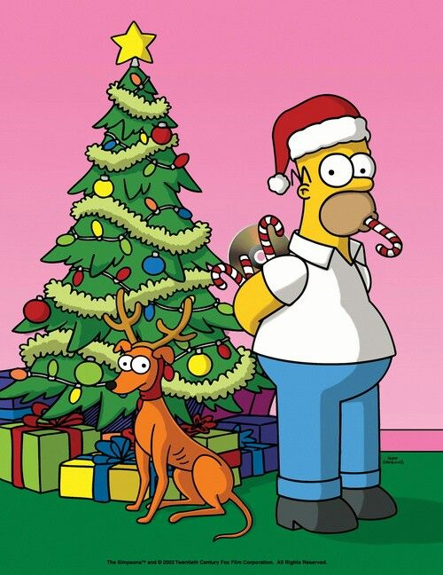

🍩 The Simpsons
"D'oh!" Sarı ailenin bitmeyen maceralarına hazır mısın?
1. Simpson ailesinin yaşadığı kasabanın adı nedir?
2. Homer Simpson’ın çalıştığı nükleer santralin sahibi olan zengin ve kötü karakter kimdir?
3. Marge Simpson’ın en belirgin fiziksel özelliği nedir?
4. Bart Simpson’ın okulda ceza aldığında tahtaya ne yapar?
5. Ailenin en zeki, saksafon çalan ve vejetaryen üyesi kimdir?
6. Homer Simpson bir hata yaptığında hangi ünlü nidayı kullanır?
7. Simpsonların sürekli izlediği, şiddet içerikli kedi-fare çizgi filminin adı nedir?
8. Bart’ın en yakın arkadaşı olan, mavi saçlı ve gözlüklü çocuk kimdir?
9. Springfield’ın her zaman neşeli, dindar ve Homer’ın gıcık olduğu komşusu kimdir?
10. Bart Simpson'ın idolü olan, yeşil saçlı televizyon palyaçosu kimdir?
11. Ailenin hiç büyümeyen ve sürekli emzik emen en küçük üyesi kimdir?
12. Homer’ın iş çıkışı sürekli takıldığı barın sahibi kimdir?
13. Springfield İlköğretim Okulu'nun müdürü kimdir?
14. Simpsonlar ailesinin kedisinin adı nedir?
15. Simpsonlar ailesinin köpeğinin adı nedir?

16. Homer'ın en sevdiği yiyecek (tatlı) nedir?
17. Dizinin her yıl Cadılar Bayramı'na özel yayınlanan korku bölümlerinin genel adı nedir?
18. Bart’ın kullandığı ünlü repliklerden biri hangisidir?
19. Marge'ın ikiz ablalarının (Patty ve Selma) en belirgin özelliği nedir?
20. The Simpsons televizyon tarihinin hangi rekorunu elinde bulundurur?
🏆 SONUÇ EKRANI